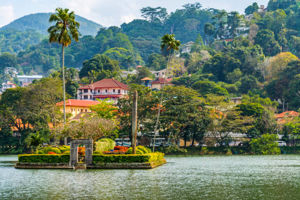
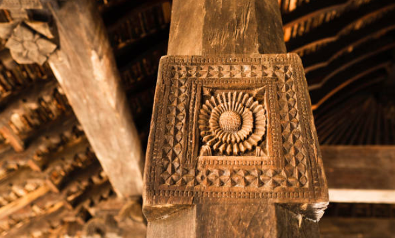

Temple of the Sacred Tooth Relic (Sri Dalada Maligawa)
The Temple of Tooth at kandy is the final location of the sacred tooth of the lord Buddha which was brought to srilanka during the reign of king “keerthi sri Megawarna” by prince “Dantha” and Princess “Hemamala” from the kindom of kalingu India. It became the palladium of srilankan kings and was preciously guarded in a special shrine built within precincts of royal palace where the capital was located. The Temple of the Tooth Relic of Lord Buddha, sri dalada Maligawa is in the centre of the city, the highest venerated religious place with steeped in cultural heritage attracting the highest respect of the Buddhists as well as the other religions all over the world.


The beautiful magnificent temple was built by late king Vimaladharmasooriya 1st in 1592 AD. The Relic Shrine is approached by a large draw-bridge over the moat and through a beautifully decorated frontispiece. A tunnel” ambarawa”, leads to the main shrine complex, having a central courtyard surrounded by storied structures. The two-storied open pillare hall in front constitutes the area where visitors and devotees gather. The lower hall has its central part set apart for the beating of drums and other forms of traditional music performed during ritual service hours. On either side are the Pallemale Vihara constructed by king Kirti Sri Rajasimha and the Octagon (Pattirippuva) built by the last king, Sri Vikrama Rajasimha on one side and the small “stupa” supposed to contain the Bowl Relic of the Buddha on the other. The storied structures to the right and left of the shrine, constitute the residence quarters of the monks engaged during daily service (Tevava), the conference hall, the Library and the Office of the Diyawadana Nilame.The recognition of the sacred temple it has been declared kandy as a world heritage city by UNESCO.


Peradeniya Botanical Gardens
The Royal Botanic Gardens, Peradeniya are located in Sri Lanka's Central Province, about 5.5 kilometers to the west of Kandy. 1.2 million residents and 400,000 tourists visited the garden in 2016.It is next to Sri Lanka's longest river, the Mahaweli.It is well known for its orchid collection. More than 4000 different plant species, including orchids, spices, mediterranean plants, and palm trees, may be found in the garden.The "National Herbarium of Sri Lanka" is connected to it. The botanical garden has a total size of 147 acres , is 460 meters above sea level, and receives 200 days' worth of rain annually. The Department of National Botanic Gardens oversees its management.


History
When King Wickramabahu III assumed the throne and established court in Peradeniya, close to the Mahaweli river, the Botanic Gardens first appeared. This was in 1371. Rajadhi Rajasinghe and King Kirti Sri came after that. King Wimala Dharma had a temple built here, but the British, who had taken over rule of the Kandyan Kingdom, demolished it.Then, in 1821, Alexandar Moon laid the foundation for a botanical garden. He cultivated coffee and cinnamon plants in the garden.[4] Plants from Kew Garden, Slave Island, Colombo, and the Kalutara Garden in Kalutara were used to create the Peradeniya Botanical Garden, which was officially founded in 1843. Greater independence was granted to the Royal Botanic Garden, Peradeniya.

Kandy Lake

Built in 1807 by King Sri Wickrama Rajasinghe near to the Temple of the Tooth, Kandy Lake , also known as Kiri Muhuda or the Sea of Milk, is an artificial lake in the center of the hill city of Kandy, Sri Lanka. Its size was diminished over time. Fishing is prohibited since the lake is protected.
History
Tigolwela, a section of paddy fields, was once the lake in front of the Temple of the Tooth. King Sri Wickrama Rajasinha transformed it into a lake in 1807. The lake built afterwards was also called Kiri-muhuda since there had previously been a pond with the name Kiri-muhuda in the center of the Tigolwela. Kandy Lake is credited to architect Deveda Moolacharya. The steps leading into the lake by the Mahamaluwa are still discernible on the Paththirippuwa (octagon) side, where the monarch initially constructed a dam across the paddy fields, extending over to the Poya-maluwa. The dam, on which a road was built, made it possible for the king to cross over to the Malwatte Vihare. To quote D'Oyley,
Description
Kandy Lake covers an area of 6,544 square meters. The radius is 3.21 kilometers. 18.5 meters is the maximum depth. The parapet wall, known as Walakulu Bemma, is 633.82 meters long and has the appearance of a cloud. In the past, the structure at the lake's center, together with several antiquated ruins, was referred to as Diyatilaka Mandapaya. This pavilion is thought to have been utilized by the Kings for leisure.There are places to walk or run around Kandy Lake. Views of the hills and the town are available from the trail that circles the lake in the shade. Atop a hill overlooking the lake sits the Malwatte temple, one of the two main temples of the Theravada Buddhist Siyam Nikaya sect.
Diyathilaka Mandapaya
To cross the lake to the other side, Sri Wickrama Rajasinghe constructed a dam. The king created an island by removing the dirt from the Malwatte Vihare end and the palace end. Initially, the Queen and the ladies of the court utilized this island as their royal summer residence. Later, the British utilized it as an ammunition storage facility and surrounded it with a parapet in the appearance of a fortress.
Walakula Bamma
In order to enhance the beauty of the Kandy Lake, a wall known as Walakulu Bamma or Clouds Wall was constructed around it. It took one talented architect to construct it, and it circles the lake on half of its perimeter. Before the British took control of the city and compelled Sri Wickrama Rajasinghe to cede control of the Kandian kingdom, he was unable to finish the wall. The Walakulu Bamma is yet incomplete. On festival days, oil lights were once lit in the triangular- shaped holes in the wall.
Ulpange
Part of the Ulpange or Queens Bathing Pavilion is located in Kandy Lake. When taking a bath in the lake, Sri Wickrama Rajasinghe's wives and concubines used the pavilion. Following their occupation of the city, the British constructed another floor and converted the structure into a library. Currently, it serves as a police station.

Trees of all kinds, including Nuga trees, palm trees, fruit trees, Sal trees, and Mara trees, have been planted all around the lake. Around 74 years old are a few of the trees. The Kandy Municipal Council is currently responsible for caring for the trees. The lake is home to a variety of bird species, including pelican, white egret crane, wood stork, and Indian cormorant.
Pollution
The lake's pollution is a severe issue. By erecting signs and running environmental clubs, the government and the nearby schools are attempting to lessen the issue. The lake was used by the Kandy water board to supply water to the neighboring communities up until 1960. The increased pollution caused them to stop pumping water out of the lake.
Hanthana Mountain Range
South-west of Kandy in Sri Lanka's central highlands is where you'll find the Hanthana Mountain Range. According to the National Environment Act, it was designated as an environmental protection area in February 2010. The range's highest point is 1,200 meters (3,800 feet). The mountain range has seven peaks in all. The Uura Kanda is the highest. The range is a popular location for Sri Lankan mountain walkers. The Hanthana mountain range is located close to the University of Peradeniya.
Embekke Devalaya

In Sri Lanka, during the Gampola Era , King Vikramabahu III constructed the Embekka Devalaya (Embekka Temple). The Kataragama deviyo is the focus of the Devalaya. At this location, people also worship Devatha Bandara, a local god. The "Sanctum of Garagha", the "Digge" or "Dancing Hall," and the "Hevisi Mandapaya" or "Drummers' Hall" are the three sections that make up the shrine. Visitors have gravitated toward the Drummers' Hall because of the exquisite wood carvings[2] on its elaborate pillars and its steeply pitched roof.
Location
In the Kandy District's Medapalata Korale of Udunuwara, Embekke Devalaya is located. In earlier times in Sri Lanka, people would stop here for protection on lengthy trips or pilgrimages. The King Bhuwanekabhahu IV is claimed to have constructed this Ambalama between AD 1341 and 1357.
Carvings and woodwork
Some of the timber used for the "Drummers' Hall" is reported to have come from a Gampola "Royal Audience Hall" that had been abandoned. The hall may have undergone restorations while the Sinhalese Kings of Kandy were in power. Some of the best specimens of Sinhalese art can be found on the carvings that grace the wooden pillars of the drummers' hall and the "Vahalkada" (the Devala's entrance porch, which is thought to be older). The wooden pillars have an octagonal base and a square-shaped "Pekada" at the top made of four leaves. The carvings of interwoven swans, double -headed eagles, entwined rope patterns, nursing mothers, and soldiers fighting on are among the most notable and well -known.